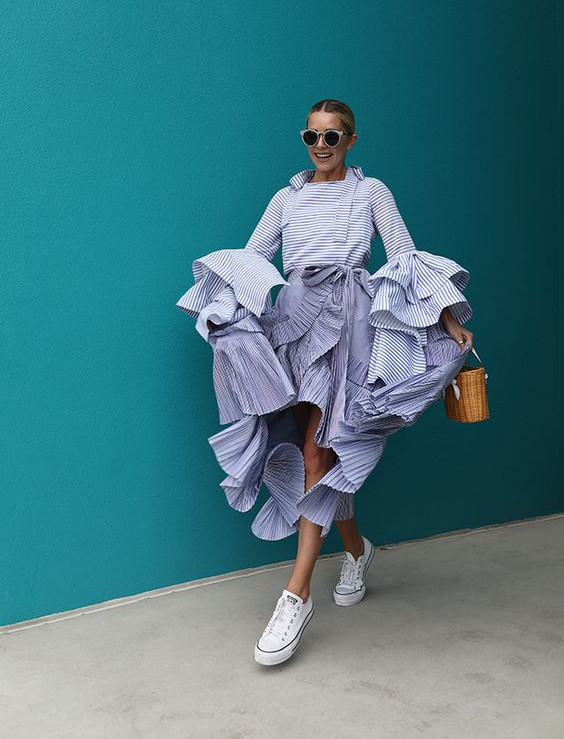
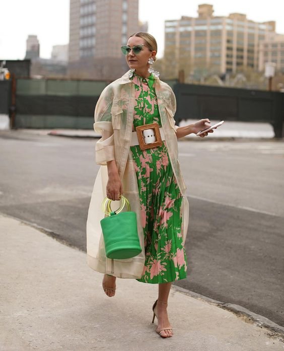

Serviços
O que é a análise de coloração pessoal?
Aplico o método sazonal expandido para descobrir quais cores harmonizam mais com você. Sua temperatura, intensidade, profundidade e constraste. Você receberá dicas dos melhores tons de cabelo, tons de maquiagem e combinações de cores.
Além de aprender a burlar a cartela, para não deixar de usar as cores que você ama!

Básico:
- Aplicação do Método de Análise Sazonal Expandido e verificação da cartela de cores;
- Cartela digital.

Completo:
- Aplicação do Método de Análise Sazonal Expandido e verificação da cartela de cores;
- Cartela digital;
- Dicas de como usar suas cores na prática;
- Análise da sua maquiagem;
- Manual digital personalizado para melhor uso das suas cores.